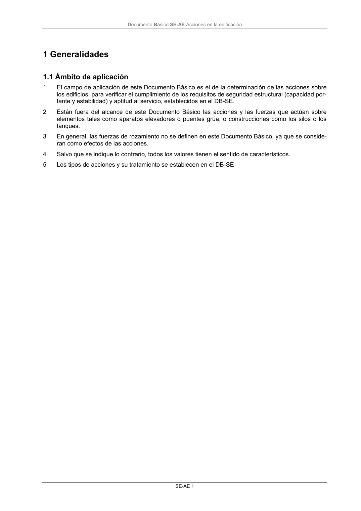
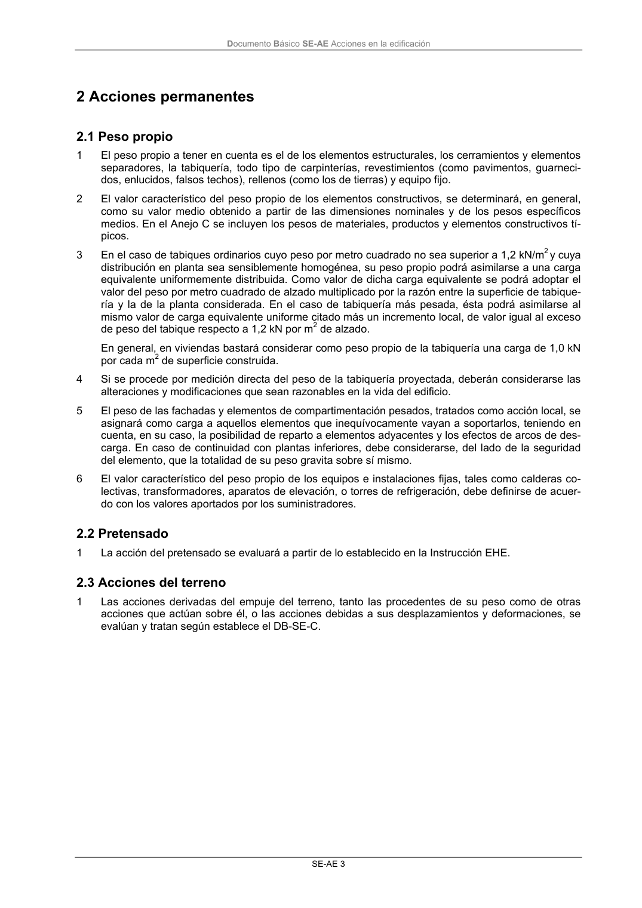

DB-SE-AE · 1 Generalidades 1.1 Ámbito de aplicación · versión 2009-04 · capa oficial
Formatos: JSON compacto · Markdown · PDF fuente
Ámbito del documento · texto del ámbito · documento y tablas
ID técnico a0010 · PDF pág. 5-7 · jerarquía no validada por persona · contrastado con el literal de la página 5 (candidato tipográfico); no validado por persona · padre: raíz
1 Generalidades 1.1 Ámbito de aplicación 1.1 Ámbito de aplicación 1 El campo de aplicación de este Documento Básico es el de la determinación de las acciones sobre los edificios, para verificar el cumplimiento de los requisitos de seguridad estructural (capacidad por- tante y estabilidad) y aptitud al servicio, establecidos en el DB-SE. 2 Están fuera del alcance de este Documento Básico las acciones y las fuerzas que actúan sobre elementos tales como aparatos elevadores o puentes grúa, o construcciones como los silos o los tanques. 3 En general, las fuerzas de rozamiento no se definen en este Documento Básico, ya que se conside- ran como efectos de las acciones. 4 Salvo que se indique lo contrario, todos los valores tienen el sentido de característicos. 5 Los tipos de acciones y su tratamiento se establecen en el DB-SE Documento Básico SE-AE Acciones en la edificación SE-AE 3


PDF fuente redistribuible: copia fiel enlazada en esta página (SHA256 verificado).